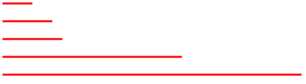

选择器
1. for in方法会遍历对象的所有自有属性和原型属性，如果想要过滤从父类继承的属性和方法，筛选出对象的自有属性，有两种方法：①设置原型属性为不可枚举。②增设自有属性的筛选条件。
例题1: for in方法遍历对象的所有自有属性和原型属性
<script>
function Person(){
this.name="jake";
};
function Student(){
this.age='23';
};
Student.prototype=new Person();
var s1=new Student();
for (var i in s1) {
alert(s1[i]);//依次弹出23,jake。
}//遍历对象s1所有可枚举的自有属性(age)和原型属性(name)。
</script>
例题2:设置原型属性为不可枚举
<script>
function Person(){
this.name="jake";
Object.defineProperty(this,"name",{enumerable:false});
//设置Person类所有实例对象的name属性为不可枚举。
};
function Student(){
this.age='23';
};
Student.prototype=new Person();
var s1=new Student();
for (var i in s1) {
alert(s1[i]);//弹出23。
}//遍历对象s1所有可枚举的自有属性(age)和原型属性(无)。
</script>
例题3:增设自有属性的筛选条件。
<script>
function Person(){
this.name="jake";
};
function Student(){
this.age='23';
};
Student.prototype=new Person();
var s1=new Student();
for (var i in s1) {
//遍历对象s1所有可枚举的自有属性(age)和原型属性(name)。
if (s1.hasOwnProperty(i)) {
//筛选对象s1所有的自有属性(age)。
alert(s1[i]);//弹出23。
};
};
</script>
2. 定义或修改对象某个自有属性的属性特征：
Object.defineProperty(对象,"属性名",{
value:"属性值",
writable:true/false,
enumerable:true/false,
configurable:true/false,
});
这种方法只能定义或修改对象自有属性的属性特征，而不能定义或修改对象原型属性的属性特征，若属性名为原型属性，则编辑器会默认给该对象添加一个同名自有属性，若未定义该自有属性的属性值，属性值默认为undefined。
例题1：
<script>
function Person(){
this.name="jake";
};
function Student(){
this.age='23';
};
Student.prototype=new Person();
var s1=new Student();
Object.defineProperty(s1,"age",{value:25});
//由于对象s1拥有age自有属性，故此行代码含义为修改对象s1的age自有属性的属性值为25。
Object.defineProperty(s1,"name",{enumerable:false});
console.log(s1.name)
//由于对象s1没有name自有属性，故此行代码含义为给对象s1添加自有属性name，值为undefined，并定义不可枚举。此时即使该自有属性的属性值为undefined，优先级仍高于原型name属性值"jake"。
</script>
3. 课程目标：①jQuery; ②Zepto; ③模块化开发; ④AMD CMD插件开发;
4. 课程案例：图片异步加载、图片放大镜、图片滚动、分页插件、弹出框dialog、表单验证。
5. window.onload与$(document).ready()的对比:
对比 | window.onload | |
执行时机 | 必须等待网页中所有内容加载完毕后(包括图片)才能执行 | 网页中所有DOM结构绘制完毕后就执行，可能DOM元素关联的资源并未加载完毕 |
编写个数 | 不能同时编写多个，否则发生覆盖 | 可以同时编写多个 |
简化写法 | 无 | $(function(){}) |
$().ready() | ||
优点 | 元素的关联文件已加载完成， 可对关联文件执行相应操作 | 速度快 |
缺点 | 速度慢 | 元素的关联文件未加载完成，可能无法对关联文件执行相应操作(例如:设置图片宽高等) |
总结：①页面加载过程为从上往下，先加载节点，再加载资源。window.onload为文档(节点+资源)加载完成，$(document).ready()为节点加载完成。
②在jQuery函数库中有另一个关于页面加载的方法——load()方法，该方法会在元素的onload事件中绑定一个处理函数。如果处理函数绑定给window对象，则会在所有内容(包括窗口、框架、对象和图像等)加载完毕后触发，如果处理函数绑定在元素上，则会在元素的内容加载完毕后触发。load()方法可以解决ready()方法的缺点。
6. 原生javaScript代码实现$(document).ready()的功能：
var ready = function(callback) {
if (/complete|loaded|interactive/.test(document.readyState) &&
document.body) {
callback();
} else {
document.addEventListener("DOMContentLoaded", function() {
callback();
}, false);
};
};
ready(function() {
代码块;
});
若不考虑浏览器兼容，以上代码可以简化为：
document.addEventListener("DOMContentLoaded", function() {
执行代码块;
});
注意：①ready为一个以函数(callback)作为参数的函数，ready函数中代码块的含义为当节点已加载完成时，执行callback函数(参数函数)。②在事件侦听中，第三个参数为布尔值，当值为false时，在事件冒泡阶段触发当前事件处理函数，当值为true时，在事件捕获阶段触发当前事件处理函数，若不填第三个参数，默认为false。
7. DOM中的querySelector选择器：
①document.querySelector("元素名") 获取符合条件的第一个元素
②document.querySelector("#ID名") 获取指定ID的唯一的元素
②document.querySelector(".类名") 获取指定类名的第一个元素
注意:使用querySelector选择器可以将元素名称、ID名、类名作为选择条件，但获取的是符合筛选条件的第一个元素。
8. 由于if(){}条件语句中声明的变量为全局变量，在if条件语句外也能够调用，故javaScript中没有块级作用域的概念，但我们可以通过闭包实现块级作用域的功能。
9. ECMAScript为JavaScript的语法，是JavaScript的基础，DOM与BOM是浏览器厂家封装的JavaScript方法。
10. call是所有函数的共有方法，含义为将该函数作为方法与一个对象绑定。
alert(Math.max.call(null,1,3,23,5,6))
alert(Math.max.apply(null,[1,3,23,5,6]))
语法:函数.call(对象,实参1,实参2...);
函数.apply(对象,[实参1,实参2...]);
P9(7)对比:
类数组不是数组——JavaScript中的类数组包括:节点集合、函数参数集合arguments。
类数组转化为数组的JavaScript原生方法为:
①var arr=[].slice.call(类数组);
②var arr=Array.prototype.slice.call(类数组);
注释：①数组.slice(起始底，起始底+截个数)的返回值为原数组被选择元素组成的新数组。②若方法无参数，则数组.slice()的返回值为原数组所有元素组成的新数组。③数组为一个对象，判断两个对象是否相等的依据为两个变量名是否指向同一个堆地址。
类数组转化为数组的jQuery方法为:
①var arr=$("sel").toArray();
11. 元素的属性与this的指代
例题1:<script>
var a=1;
//等价于window.a=1
var ojson={
a:10,
//等价于ojson.a=10
val:function(){
//等价于ojson.val=functon(){alert(this.a*=2);}
alert(this.a*=2);
//this指代与当前方法所绑定的对象。
}
};
ojson.val();
//执行ojson对象的val方法，弹出20
//此时obj.a=20
var b=ojson.val;
//b为一个函数:b=function(){alert(this.a*=2);}
b();
//等价于window.b(),b函数中的this为window,弹出2
//此时window.a=2
ojson.val.call(window);
//window调用ojson.val函数，弹出4
//此时window.a=4
alert(window.a+ojson.a)
//弹出24
</script>
例题2：<script>
var a=1;
//等价于window.a=1
var ojson={
a:10,
//等价于ojson.a=10
val:function(){
//等价于ojson.val=function(){alert(a*=2);}
alert(a*=2);
//等价于window.a*=2
}
};
ojson.val();
//弹出2,此时window.a=2
var b=ojson.val;
//等价于b=function(){alert(window.a*=2);}
b();
//弹出4,此时window.a=4
alert(window.a+ojson.a);
//弹出14
</script>
注意: 一切变量都是一个对象的属性，一切函数都是一个对象的方法。
例题3:<script>
a=1;
//等价于window.a=1,a为window的属性，不过该属性可以删除。
var b=2;
//等价于window.a=1,a为window的属性，不过该属性不可删除。
console.log(Object.getOwnPropertyDescriptor(window,"a"))
//configurable: true
console.log(Object.getOwnPropertyDescriptor(window,"b" ))
//configurable: false
delete window.a;
delete window.b;
</script>
12. jQuery对象与DOM对象的相互转化
jQuery对象不能够使用DOM中的方法，DOM对象不能够使用jQuery中的方法。因此有时我们需要将jQuery对象与DOM对象相互转化。
jQuery对象转化为DOM对象
var $tc=$("#tc");
var tc=$tc[0]; //取出类数组中的唯一元素，转化为DOM对象
var $tc=$(".tc");
var tc=$tc[index];//取出类数组中的某个元素，转化为DOM对象
var $tc=$("p");
var tc=$tc[index];//取出类数组中的某个元素，转化为DOM对象
DOM对象转化为jQuery对象
var tc=document.getElementById("tc");
var $tc=$(tc);
//DOM对象转化为jQuery对象,类数组中只有一个元素
var div=document.getElementsByTagName('div');
var $div=$(div);
//DOM对象转化为jQuery对象,类数组中有多个元素
注意：①jQuery对象是一个类似数组的对象，可以通过[index]或.get(index)方法得到相应的(单个)DOM对象。(这两个方法为在jQuery对象中取出单个元素转化为DOM对象，而不仅仅是从jQuery类数组中取出单个jQuery对象)。②jQuery对象—加[index]→DOM对象;DOM对象—$()包裹→jQuery对象。③jQuery对象转化为的DOM对象一定是单个的对象,DOM对象转化为jQuery对象,类数组中既可以有单个元素又可以有多个元素。
13. jQuery对象有一个length属性,获取当前jQuery对象的元素个数。
例如:$(selector).length
14. CSS类选择器可以添加元素类型的筛选条件:
p.left{}——定位所有类名为left的p元素。
注意:在jQuery基本选择器中同样可以使用这种用法。
$("元素类型.类名")——根据元素类型与类名匹配元素。
15. 利用jQuery选择器可以非常快速地找到DOM元素，然后为他们添加相应的行为，而不必担心浏览器的兼容问题。jQuery的行为规则都必须在获取到元素后才能生效。
CSS选择器找到元素后是添加样式，而jQuery选择器找到元素后添加行为。
jQuery选择器——基本选择器、层次选择器、过滤选择器以及表单选择器。
分类 | 语法 | 含义 |
基本选择器 | $(window) | 定位window对象(无引号) |
$(document)或$() | 定位文档根节点(无引号) | |
根据元素名匹配元素 | ||
$("#id名") | 根据ID名匹配元素 | |
$(".类名") | 根据类名匹配元素 原生JavaScript获取类名不兼容 | |
$("*") | 匹配所有元素 | |
匹配选择器集合 | ||
层次选择器 | 选取sel1元素内层的所有sel2元素 | |
选取sel1元素中所有sel2子元素 | ||
或$("sel1").next("sel2") | 选取sel1元素的下一个 sel2同辈元素 | |
或$("sel1").nextAll("sel2") | 选取sel1元素之后所有的 sel2同辈元素 | |
基本过滤选择器 | 根据序号/条件过滤sel元素——: | |
$("sel:first") | 选取第一个sel元素 | |
$("sel:last") | 选取最后一个sel元素 | |
$("sel:even") | 选取索引是偶数的元素 (索引从0开始) | |
$("sel:odd") | 选取索引是奇数的元素 | |
$("sel:eq(index)") | 选取索引等于index的sel元素 | |
$("sel:gt(index)") | 选取索引大于index的sel元素 | |
$("sel:lt(index)") | 选取索引小于index的sel元素 | |
$("sel1:not(sel2)") | 去除所有与给定选择器匹配的元素 | |
$("sel:header") | 选取sel中所有的标题元素 | |
$("sel:animated") | 选取正在执行动画的sel元素 | |
$(":focus") | 选取当前获取焦点的元素 | |
注意:冒号前有空格(后代选择器)与无空格(过滤选择器) | ||
内容过滤选择器 | 根据内容过滤sel元素——: | |
$("sel:contains(text)") | 选取含有文本text的sel元素 | |
$("sel:empty") | 选取空的sel元素 | |
$("sel1:has(sel2)") | 选取包含sel2的sel1元素 | |
$("sel:parent") | 选取非空的sel元素 | |
可见性过滤选择器 | $("sel:hidden") | 选取所有不可见的sel元素 |
$("sel:visible") | 选取所有可见的sel元素 | |
属性过滤选择器 | 根据属性过滤sel元素——[] | |
$("sel[属性名]") | 选取拥有此属性的元素 | |
$("sel[属性名=属性值]") | 选取拥有此属性名及对应属性值等于"属性值"字符串的sel元素 | |
$("sel[属性名!=属性值]") | 选取拥有此属性名及对应属性值不等于"属性值"字符串的sel元素 | |
$("sel[属性名*=属性值]") | 选取拥有此属性名及对应属性值含有"属性值"字符串的sel元素 | |
$("sel[属性名^=属性值]") | 选取拥有此属性名及对应属性值以"属性值"字符串为开头的sel元素 | |
$("sel[属性名$=属性值]") | 选取拥有此属性名及对应属性值以"属性值"字符串为结尾的sel元素 | |
$("sel[属性过滤][属性过滤]") | 选取经过多次属性筛选的元素 | |
注意: sel可省略，选取满足属性筛选条件的所有元素。 | ||
子元素过滤选择器 | 根据序号过滤sel子元素——: | |
$("sel :nth-child(index)") (注意:index可为2n+1形式) | 元素sel的第index个子元素 (索引从1开始) | |
$("sel :first-child") | 元素sel的第一个子元素 | |
$("sel :last-child") | 元素sel的最后一个子元素 | |
注意:子元素过滤选择器中冒号之前的空格不能省略 (子元素过滤选择器属于后代选择器的分支) | ||
表单对象属性过滤选择器 | $("sel:enable") | 选取所有可用元素 |
$("sel:disable") | 选取所有不可用元素 | |
$("sel:checked") | 选取所有被选中的元素 (单选框radio、复选框checkbox) | |
$("sel:selected") | 选取所有被选中的选项元素 (下拉列表select) | |
表单选择器 | $("sel:input") | 选取所有的<input>、<textarea>、<select>和<button>元素 |
$("sel:text") | 选取所有的单行文本框 | |
$("sel:password") | 选取所有的密码框 | |
$("sel:radio") | 选取所有的单选框 | |
$("sel:checkbox") | 选取所有的多选框 | |
$("sel:submit") | 选取所有的提交按钮 | |
$("sel:image") | 选取所有的图像按钮 | |
$("sel:reset") | 选取所有的重置按钮 | |
$("sel:button") | 选取所有的按钮 | |
$("sel:file") | 选取所有的上传域 | |
$("sel:hidden") | 选取所有的不可见元素 | |
补充: P13(11)遍历节点 | $("sel1").first() | 取得第一个匹配元素 |
$("sel1").last() | 取得最后一个匹配元素 | |
$("sel1").eq(index) | 取得第index个匹配元素 | |
$("sel1").filter("sel2") | 取得满足筛选条件的匹配元素集合 | |
$("sel1").not("sel2") | 取得不满足筛选条件的匹配元素集合 | |
$("sel1").children() | 取得匹配元素的子元素集合 | |
$("sel1").children("sel2") | 取得匹配元素满足筛选条件的子元素集合 | |
$("sel1").find() | 语法错误 | |
$("sel1").has("sel2") | 选取包含sel2的sel1元素 | |
$("sel1").find("sel2") | 取得匹配元素满足筛选条件的内层元素集合 | |
$("sel1").next() | 取得匹配元素后面紧邻的同辈元素 | |
$("sel1").next("sel2") | 取得匹配元素后面满足筛选条件的紧邻同辈元素 | |
$("sel1").nextAll() | 取得匹配元素后面所有同辈元素集合 | |
$("sel1").nextAll("sel2") | 取得匹配元素后面所有满足筛选条件的同辈元素集合 | |
$("sel1").nextUntil() | 取得匹配元素后面所有同辈元素集合 | |
$("sel1").nextUntil("sel2") | 取得匹配元素到筛选元素之间所有的同辈元素集合(匹配元素位置靠前) | |
$("sel1").prev() | 取得匹配元素前面紧邻的同辈元素 | |
$("sel1").prev("sel2") | 取得匹配元素前面满足筛选条件的紧邻同辈元素 | |
取得匹配元素前面所有同辈元素集合 | ||
$("sel1").prevAll("sel2") | 取得匹配元素前面所有满足筛选条件的同辈元素集合 | |
$("sel1").prevUntil() | 取得匹配元素前面所有同辈元素集合 | |
$("sel1").prevUntil("sel2") | 取得筛选元素到匹配元素之间所有的同辈元素集合(筛选元素位置靠前) | |
$("sel1").siblings() | 取得匹配元素前后所有同辈元素集合 | |
$("sel1").siblings("sel2") | 取得匹配元素前后所有满足筛选条件的同辈元素集合 | |
$("sel1").parent() | 取得匹配元素的父级元素 | |
$("sel1").parent("sel2") | 取得匹配元素满足筛选条件的父级元素 | |
$("sel1").parents() | 取得匹配元素所有的外层元素集合 | |
$("sel1").parents("sel2") | 取得匹配元素满足筛选条件的外层元素集合 | |
$("sel1").closest() | 语法错误 | |
$("sel1").closest("sel2") | 取得匹配元素从自身开始由内向外第一个满足筛选条件的元素 | |
注意：①有且仅有一对引号,一定没有空小括号。
②使用jQuery选择器获取的是jQuery对象。
与P6(12)对比:jQuery对象是一个类似数组的对象，可以通过[index]
或.get(index)方法得到相应的(单个)DOM对象。
③不同选择器之间可以交叉使用。
④在遍历节点过程中，sel2必须用引号包裹，但不可被$()包裹。
例题：找到所有空的a节点(没有子元素),内部设置一段文本与边框。
$('a:empty').html('<p style="border:2px solid red">xxx</p>')
16. \ ——字符串连接符，使同一字符串可以实现换行功能。
\\ ——转义符，使jQuery选择器可以获取特殊字符。
例如: var str='ab\ ——字符串连接符
cd'
$('#id\\#b\\[1\\]') ——转义符
注意:使用字符串连结符(\)将换行的字符串进行拼接，此时即使已经实现字符串拼接的功能，但拼接后的字符串颜色可能仍不是字符串的默认颜色(黄色)。
17. is方法:根据选择器、DOM元素或 jQuery 对象来检测匹配元素集合，如果其中至少有一个元素符合这个给定的表达式就返回true，否则返回false。
语法:$("sel1").is("sel2")
例子:$("selector").is(":animated") //判断元素是否处于动画状态
DOM操作
1. 哪些方式可能引起内存泄露？
内存泄露指由于疏忽或错误造成程序未能释放已经不再使用的内存的情况。内存泄露并非指内存在物理上的消失，而是应用程序分配某段内存后，由于设计错误，失去了对该段内存的控制，因而造成了内存的浪费。
在JavaScript编程中，以下编码方式可能造成内存泄露：
(1)给DOM对象添加的属性是一个对象的引用。
(2)DOM对象与JS对象相互引用。
(3)给DOM对象用attachEvent绑定事件。
(4)从外到内执行appendChild。
2. 使用iframe和form如何实现跨域提交？
3. 电商购物车表格：①使用ul/li标签替换table/tr/td标签。②使用模板实现增加/删除一行/单元格的功能。
注意：使用table标签的缺点①table标签中的td单元格难以定位。②创建插入tr、td需要使用for循环，比较麻烦。
4. 图片标准尺寸:30px; 50px; 60px; 180px; 300px

5. 文字与图片垂直居中与水平居中的多种实现方法？
图片居中:potision:absulute; top:50%; left:50%; margin-top:
-50px;margin-left:-50px。
6. 代码优化: var a=1;var b=2; —→ var a=1,b=2;
7. 类数组不是数组——JavaScript中的类数组包括:节点集合、函数参数集合arguments。
类数组转化为数组的JavaScript原生方法为:
①var arr=[].slice.call(类数组);
②var arr=Array.prototype.slice.call(类数组);
类数组转化为数组的jQuery方法为:
①var arr=$("sel").toArray();
P3(10)对比:
call是所有函数的共有方法，含义为将该函数作为方法与一个对象绑定。
alert(Math.max.call(null,1,3,23,5,6))
alert(Math.max.apply(null,[1,3,23,5,6]))
语法:函数.call(对象,实参1,实参2...);
函数.apply(对象,[实参1,实参2...]);
8. 事件代理
事件委托可以解决事件处理程序过多的问题。事件委托利用了事件冒泡，只指定一个事件处理程序，就可以管理某一类型的所有事件。使用事件委托，只需在DOM树中较高的层次上添加一个事件处理程序。
content[0].addEventListener('click',function(e){
var target=e.target;
if (target.className=="del") {
var obj=target.parentNode.parentNode
obj.parentNode.removeChild(obj);
};
});
注意: e.currentTarget:绑定事件的Html元素对象
e.target:触发事件的Html元素对象
例子:e.target为触发事件的Html元素对象
<script>
var div = document.getElementById('div');
div.addEventListener('click', function(e) {
alert(e.target === div);
//点击div弹出true,点击div内层元素弹出false。
alert(e.currentTarget===div);
//不管点击div还是div内层元素，都弹出true。
})
</script>
9. 在合理设置断点的情况下，我们可以在控制台调试和获取包括函数、闭包中的任何代码和变量。
10. 将全局变量放在闭包中，生成局部执行环境，全局变量转化为局部变量，防止全局变量被污染。
方法1:(function() {
var a = 1;
alert(1);
}());
方法2:(function() {
var b = 1;
alert(1);
})();
问题：两种书写格式有什么区别？
11. jQuery——创建节点
①创建元素节点
方法一: $("<元素名>") 方法二: $("<元素名></元素名>")
举例:$("<li>") $("<li></li>")
②创建创建元素节点、文本节点、属性节点。
$("<元素名 属性名='属性值' 属性名='属性值'>文本内容</元素名>")
举例:$("<p id='pid'>段落</p>")
注意:①创建元素节点有两种方法，第一种更加简便。②文本节点与属性节点可以不依附于元素节点的创建而创建。③动态创建的元素节点不会自动添加到文档中，需要使用其他方法进行插入。
12. jQuery——插入节点
语法:$("A").方法("B")
(1)$("A").append("B") ——将B移动到A的结尾;
(2)$("A").appendTo("B") ——将A移动到B的结尾;
(3)$("A").prepend("B") ——将B移动到A的开头;
(4)$("A").prependTo("B") ——将A移动到B的开头;
(5)$("A").before("B") ——将B移动到A的之前;
(6)$("A").insertBefore("B") ——将A移动到B的之前;
(7)$("A").after("B") ——将B移动到A的之后;
(8)$("A").insertAfter("B") ——将A移动到B的之后;
注意:①插入节点实际上是一个移动节点的过程。在这个过程中有两个对象，一个是被移动对象，一个是位置基准对象。②若方法名为一个单词，则B为被移动对象,A为移动基准对象;若方法名为两个单词，则A为被移动对象,B为移动基准对象。③这些方法为jQuery对象的方法，故方法之前必须为被选择的jQuery元素$("A"),此元素可以是已有元素，也可以是新创建元素。④若B为移动基准对象——方法(2)(4)(6)(8),则B可省略$()。若B为被移动对象——方法(1)(3)(5)(7),则B可为字符串。
总结:点之前必须为$(),若点之后为被移动元素对象,必须用$()或标签包裹,若点之后为被移动字符串对象,不可加$()。
若点之后为移动基准对象,该对象一定为元素对象,可不加$()。
关键:点之前必为$(),点之后可无$()。
13. jQuery——删除节点
(1)$("A").remove()
——删除节点,保留属性,保留样式,清除节点事件
(2)$("A").detach()
——删除节点,保留属性,保留样式,保留节点事件
(3)$("A").empty()
——清空节点
注意:①(1)(2)两个方法的返回值都为被删除的节点，可将其保存在一个变量中。②(1)方法括号中可传递过滤选择器参数，筛选待删除的被选元素节点。③不同选择器之间可以交叉使用，任何一个选择器之后都可以添加过滤选择器,故(1)(2)(3)方法的$("A")选择器中同样可以添加过滤选择器。
14. jQuery——复制节点
(1)$("A").clone() ——复制节点，复制属性，复制样式，不复制事件
(2)$("A").clone(true) ——复制节点，复制属性，复制样式，并复制事件
注意：方法的返回值为通过复制而生成的新节点。方法(1)中新节点无模节点的绑定事件，方法(2)中新节点保留模节点的绑定事件。
15. jQuery——替换节点
(1)$("A").replaceWith("<元素B>文本内容</元素B>")
元素B替换元素A
(2)$("<元素A>文本内容</元素A>").replaceAll("B")
元素A替换元素B
注意: ①使用新创建的元素节点替换页面中已有的元素节点。②新创建的原素节点可省略$()。③(1)方法的返回值为$()中的A元素,(2)方法的返回值为$()中的A元素。故(2)方法可以执行链式操作，更加实用。
16. jQuery——包裹节点
(1)$("A").wrap("<元素B></元素B>") ——B包A,1包1;
(2)$("A").wrapAll("<元素B></元素B>") ——B包A,1包all;
(3)$("A").wrapInner("<元素B></元素B>") ——B包A内,1包all;
(4) $('A').unwrap() ——删除A的父级元素
注意:①使用新创建的元素节点包裹页面中已有的元素节点。②新创建的原素节点可省略$()。
DOM操作
1. fetch可以替代Ajax与服务端进行交互。
2. jQuery中，attr()方法用来获取和设置元素属性，removeAttr()方法用来删除元素属性。
3. (1) $("sel").prop() (2) $("sel").attr() (3) $("sel").css()
(1)(2)为jQuery中设置或获取Html元素属性的方法;
(3)为jQuery中设置或获取Html元素CSS样式的方法。
注意:①修改元素属性或CSS样式方法的返回值为被修改之后的html元素(可实现链式操作)，获取元素属性与CSS样式方法的返回值为html元素属性值或CSS样式属性值。②(2),(3)方法可以通过传入Json对象一次性对同一个元素设置多个属性或样式。③jQuery库封装的所有函数都以Html元素对象的方法的形式存在,在书写jQuery代码时,不出现等号。④jQuery中的很多方法都是同一个函数实现获取(getter)和设置(setter)的，例如attr()方法既可以设置元素属性的值，也能获取元素属性的值，类似的还有html()、text()、height()、width()、val()、css()等方法。
注意:当选择一组元素时，取值是一组中的第一个，设置是一组中的所有元素。
4. $("sel").prop()与$("sel").attr()的对比。
相同点:二者都可以设置sel元素的Html元素属性。
不同点:使用$("sel").prop()设置元素属性时，DOM内置属性可见,自定义属性不可见。使用$("sel").attr()设置元素属性时，DOM内置属性和自定义属性都可见。
当访问某些属性时，例如disabled或者checked，使用attr()获取的属性值可能是disabled或者undefined，而使用prop()获取的是标准属性：true/false。
原则一:只添加属性名称该属性就会生效的应该使用prop();
原则二:只存在true/false的属性应该使用prop();
即如果是设置disabled和checked这些属性时，应该使用prop()。
5. document.referrer:返回载入当前文档的URL(前一个文档的URL)。
6. 属性操作
获取和设置属性 | $("sel").attr("属性名") | 获取一个属性值 |
$("sel").attr("属性名","属性值") | 设置一个属性 | |
$("sel").attr({"属性名":"属性值",...}) | 设置多个属性 | |
删除属性 | $("sel").removeAttr("属性名") | 删除一个属性 |
7. 样式操作(class属性操作)
获取和设置样式 | $("sel").attr("class") | 获取class属性值 |
$("sel").attr("class","类名") | 设置class属性值 | |
追加样式 | $("sel").addClass("类名") | 追加class属性值 |
移除样式 | $("sel").removeClass("类名") | 移除指定的 class属性值 |
移除所有的 class属性值 | ||
切换样式 | $("sel").toggleClass() | 已有样式 从无到有的切换 |
新加样式 是否添加的切换 | ||
$("sel").toggleClass("类名 类名") | ||
判断是否含有某个样式 | $("sel").hasClass("类名") | 返回一个布尔值 |
$("sel1").is(".类名") |
8. CSS——DOM操作
获取和 设置CSS 样式属性 | $("sel").css("属性名") | 获取一个属性值 |
$("sel").css("属性名","属性值") | 设置一个属性 | |
$("sel").css({"属性名":"属性值",...}) | 设置多个属性 |
注意:①如果设置的属性值为数字，将会被自动转化为像素值。②在css()方法中，如果需要设置属性值的属性名中带有“-”符号，例如font-size和background-color属性，有两种写法:(1)加引号 (2)驼峰式。
例如:font-size改写为"font-size"、"fontSize"。
注意: 引号必须加。
③在jQuery1.2版本之后的height()/width()方法可以用来获取和设置元素的高度和宽度。css()方法获取的高度与样式的设置有关，可能会得到"auto"，也可能得到"10px"之类的字符串，而height()/width()方法获取的高度和宽度值则是元素在页面中的实际高度，与样式的设置无关，并且不带单位"px"。
9. 设置和获取HTML、文本和value值
$("sel").html() ——获取某个元素中的HTML内容
$("sel").html("元素/文本") ——设置某个元素中的HTML内容
$("sel").text() ——获取某个元素中的文本内容
$("sel").text("文本") ——设置某个元素中的文本内容
$("sel").val() ——获取某个元素的value属性值
$("sel").val("value值") ——设置某个元素的value属性值
注意:val()方法不仅可以获取和设置元素的value属性值，还可以使select(下拉列表框)、checkbox(多选框)、radio(单选框)相应的选项被选中。此效果为jQuery库封装的方法，原生JavaScript无法实现。
方法一:$("select/checkbox/radio").val("待选项的value值")
方法二:$("select/checkbox/radio").val(["待选项的value值1,待选项的value值2"]) //以数组的形式赋值
总结:①jQuery可以通过改变select、checkbox、radio的value值，改变被选项的选中状态。②以数组的形式进行多项赋值。
10. 在jQuery中,focus()相当于JavaScript中的onfocus()方法，作用是处理获得焦点时的事件；blur()方法相当于JavaScript中的onblur()方法，作用是处理失去焦点时的事件。
jQuery事件与原生JavaScript事件的对比:①省略on;②事件处理函数放在方法的括号之中,而不是等号之后。
注意: jQuery库封装的方法无等号。
11. 遍历节点
遍历节点 | 语法 | 含义 |
$("sel1").children() | 取得匹配元素的子元素集合 | |
$("sel1").children("sel2") | 取得匹配元素满足筛选条件的子元素集合 | |
$("sel1").find() | 语法错误 | |
$("sel1").find("sel2") | 取得匹配元素满足筛选条件的内层元素集合 | |
$("sel1").next() | 取得匹配元素后面紧邻的同辈元素 | |
$("sel1").next("sel2") | 取得匹配元素满足筛选条件的后面紧邻同辈元素 | |
$("sel1").prev() | 取得匹配元素前面紧邻的同辈元素 | |
$("sel1").prev("sel2") | 取得匹配元素满足筛选条件的前面紧邻同辈元素 | |
$("sel1").siblings() | 取得匹配元素前后所有的同辈元素集合 | |
$("sel1").siblings("sel2") | 取得匹配元素前后所有满足筛选条件的同辈元素集合 | |
$("sel1").parent() | 取得匹配元素的父级元素 | |
$("sel1").parent("sel2") | 取得匹配元素满足筛选条件的父级元素 | |
$("sel1").offsetParent() | 获取第一个绝对/相对定位的外层元素，若都无定位，则获取body | |
$("sel1").parents() | 取得匹配元素所有的外层元素集合 | |
$("sel1").parents("sel2") | 取得匹配元素满足筛选条件的外层元素集合 | |
$("sel1").closest() | 语法错误 | |
$("sel1").closest("sel2") | 取得匹配元素从自身开始由内向外第一个满足筛选条件的元素 |
12. 数组的新方法reduce
<script>
arr = [1, 5, 8, 34]
var arr1 = arr.reduce(function(a, b) {
return a + b;
})
alert(arr1)//弹出数组各项之和
</script>
13. jQuery CSS-DOM 盒子模型
Width/Height() 指 content的内容尺寸;
innerWidth/Height() 指content+padding的内边距尺寸;
outerWidth/Height() 指content+padding+border的边框尺寸;
outerWidth/Height(true) 指content+padding+border+margin外边距尺寸。
注释:无单位px。
14. jQuery CSS-DOM元素定位
方法 | 属性 | 含义 |
$("sel").offset() | $("sel").offset().left | 到屏幕左距离 |
$("sel").offset().top | 到屏幕上距离 | |
$("sel").position() | $("sel").position().left | 若当前元素为绝对定位元素，left为多少时，位置不变 |
$("sel").position().top | 若当前元素为绝对定位元素，top值为多少时，当前元素位置不变 | |
$("sel").scrollTop() | 无 | 获取上卷高度 |
$("sel"). scrollTop("数值") | 无 | 设置上卷高度 |
$("sel").scrollLeft() | 无 | 获取左卷宽度 |
$("sel"). scrollLeft("数值") | 无 | 设置左卷宽度 |
注释:$("sel").scrollTop("数值");设置上卷高度生效的前提为$("sel")设置高度，并且设置overflow: scroll;或者overflow: auto;或者overflow: hidden;
动画
1. 动画质量的评价标准:帧数FPS(Frames Per Second)
FPS:动画运行时每秒的帧数，FPS越大，在屏幕上的视频就越平滑。
帧数可以理解为每秒屏幕的刷新率(即一秒钟时间内传输的图片的数量)， FPS越高越好，表示画面越流畅。
一般动画帧数为60FPS就可以称之为比较流畅了,即一帧需要16.7ms。
2. 给数组原型添加sum()方法，该方法可以实现数组求和的功能。
<script>
Array.prototype.sum = function() {
var sum = 0;
for (var n = 0; n < this.length; n++) {
sum = sum + this[n];
};
return sum;
}
var arr1 = [1, 2, 23, 3]
alert(arr1.sum())
</script>
3. 自定义事件与观察者模式。
<script>
//创建事件对象
var e=document.createEvent("Event");
//事件对象初始化
//事件对象.initEvent(type,bubble,cancelable)
//三个参数分别为事件名称、是否冒泡、是否可取消,后两个参数可省略。
e.initEvent("myevent",true,true);
//事件绑定(事件与元素进行绑定)
div.addEventListener("myevent",function(){
alert(this.innerHTML);
});
var a=0;
//事件分发(定义触发事件的时机)
btn.onclick=function(){
a++;
if (a==3) {
div.dispatchEvent(e);
//点击三次按钮,自定义事件执行。
};
};
</script>
总结: 创建事件对象——事件对象初始化——事件绑定——事件分发
4. show()、hide()与toggle()
——同时改变元素的高度、宽度和不透明度。
fadeIn()、fadeOut()、fadeTo()与fadeToggle()
——只改变元素的不透明度。
slideUp()、slideDown()与slideToggle()
——只改变元素的高度。
注意：九个方法的参数相同，为([speed,[easing],[fn]])。
speed:三种预定速度之一的字符串("slow","normal", or "fast")或表示动画时长的毫秒数值(如：1000)。
注：使用字符串必须加引号，使用毫秒数不可加引号。
easing:(Optional) 用来指定切换效果，默认是"swing"，可用参数"linear"
fn:在动画完成时执行的函数，每个元素执行一次。
5. 自定义动画
animate(params,[speed],[easing],[fn])
与九个简单动画相比，增加了一个必选参数params。
params:一个包含元素最终样式的css属性及其属性值的Json对象。
注意: ①使用animate()方法使元素运动，为了能够影响元素的"top"、"left"、"bottom"、"right"样式属性，必须先把元素的position样式设置为"relative"或者"absolute"。②可通过"+=数值"或者"-=数值"(引号不可省略)设置累加或者累减的动画效果。
6. 动画效果的执行具有先后顺序，称为动画队列。
7. 完美运动框架:startMove(对象, {终样式}, 回调函数)
jQuery自定义动画:animate({终样式},速度,效果,回调函数).方法
相同点: ①完美运动框架与jQuery自定义动画都可以实现同步运动与链式运动的效果。②完美运动框架与jQuery自定义动画都只能实现包含数值的CSS属性值变化的动画效果，例如:width、height、left、top、font-size、opacity、border-radius、marginLeft、scrollTop等；都无法实现不包含数值的CSS属性值变化的动画效果，例如:color。③完美运动框架与jQuery自定义动画都是通过{终样式}实现同步运动的效果。
不同点:对于完美运动框架，链式运动的效果通过startMove(对象, {终样式},function(){startMove(对象, {终样式}, 回调函数)} )实现。
对于jQuery自定义动画，链式运动效果通过animate({终样式},速度,效果,回调函数).animate({终样式},速度,效果,回调函数)实现。
总结:对于完美运动框架startMove(对象, {终样式}, function(){startMove()}),同层次{终样式}同步运动，内外层{终样式}链式运动。对于jQuery自定义动画animate({终样式},速度,效果,回调函数).animate(),同层次{终样式}同步运动，前后方{终样式}链式运动。
特别注意:对于jQuery自定义动画animate({终样式1},速度,效果,回调函数1).animate({终样式2},速度,效果,回调函数2)——代码执行顺序为:
{终样式1}——回调函数1中的非动画——{终样式2}——回调函数2中的非动画——{终样式3}——回调函数3中的非动画——回调函数1中的动画——回调函数2中的动画——回调函数3中的动画。
若回调函数中无动画，从前往后执行;若回调函数中有动画，除回调函数中的动画之外的其他代码从前往后执行，回调函数中的动画最后执行，且顺序为从前往后。
为避免动画执行顺序引发的错误，应防止左右层级”animate().animate()”与内外层级”animate()和animate()嵌套”混合使用。推荐使用左右层级”animate().animate()”,尽量不要将animate()动画放在回调函数中。
8. 停止元素的动画
stop([clearQueue],[gotoEnd])
[clearQueue] ——是否清除未执行的动画队列
[gotoEnd] ——当前动画是否瞬变到末状态
默认情况:停止当前动画, 不清除动画队列,当前动画不瞬变到末状态。
stop() ——当前停,不清除,不瞬变
stop(true) ——当前停,清除,不瞬变
stop(true,true) ——当前停,清除,瞬变
stop(false,true) ——当前停,不清除,瞬变
注意:较易理解的分析顺序为首先分析是否瞬变,得出当前动画的运动状态,再分析动画队列是否清除,得出动画队列的运动状态。
9. 判断元素是否处于动画状态
$("sel").is("animated")——返回值为一个布尔值。
在使用animate()方法时，要避免动画积累而导致的动画与用户行为不一致。当用户在正在执行动画的某个元素上执行animate()动画时，避免出现动画积累。解决方法是判断元素是否处于动画状态，只有当元素不处于动画状态时，才为元素添加新的动画，否则不添加。
10. 延迟动画
$("sel").delay(毫秒数).animate().delay(毫秒数).animate()
10.less的优势:①声明以@开头的变量储存CSS样式属性值。②声明以.开头的对象储存属性及属性值集合。③实现CSS样式模块化管理。
@color:"#333";
.item(@number:30px){
line-height:@number;
border:1px solid #dfdfdf;
}
#tc{
color:@color;
ul{
font-size:20px;
text-align:center;
}
ul li{
.item(40px);
margin-left:20px;
}
}
11. 动画队列——queue和dequeue的用法
jQuery中的queue()和dequeue()方法可以实现按顺序依次执行一个函数数组。
queue()和dequeue()方法的使用过程如下:
(1)创建函数数组。
(2)使用queue()方法把函数数组加入队列。
(3)使用dequeue()方法将函数数组中的第一个函数取出并执行。
例题:
//构建函数数组
var FUNC=[
function() {$("#block1").animate({left:"+=100"},aniCB);},
function() {$("#block2").animate({left:"+=100"},aniCB);},
function() {$("#block1").animate({left:"+=100"},aniCB);},
function(){alert("动画结束")}
];
//函数数组加入队列
$(document).queue('myAnimation',FUNC);
//执行队列函数
var aniCB=function(){$(document).dequeue('myAnimation');}
aniCB();
//清空队列
$(document).queue("myAnimation",[]);
//加一个新的函数放在最后
$(document).queue("myAnimation",function(){alert('动画真的结束了!')});
事件
1. 做按钮可以用button、input、a、span。使用JavaScript给按钮添加事件时，应首先取消事件的默认行为: e.preventDefault()。
2. 键盘事件可与window(浏览器对象)、document(文档对象)以及其他Html元素对象绑定，一般与document(文档对象)进行绑定。
keyCode——enter:13 Alt:18 Tab:9 Shift:16
3. 原生的javaScript不可以对选择器获取的元素集合进行集体操作，而jQuery可以对选择器获取的元素集合进行集体操作，含义为对元素集合中的每一个元素分别执行相同的操作。
4. 页面回卷(滚轮滚动)事件
<script>
document.onscroll=function(){
console.log(document.body.scrollTop+';'+document.body.scrollLeft)
}
</script>
注意:onscroll事件-document.onscrollTop/Left与window.onscrollTop /Left，且二者的值相同。由于window为浏览器对象，document为文档对象，推荐使用document文档对象。
<script>
$(window).scroll(function(){
console.log($('body').scrollTop()+';'+$('body').scrollLeft())
})
</script>
$('selector').bind(type,[data],fn)
type: 含有一个或多个事件类型的字符串，由空格分隔多个事件。比如"click"或"submit"，还可以是自定义事件名。
data:作为event.data属性值传递给事件对象的额外数据对象。
fn:绑定到每个匹配元素的事件上面的处理函数。
例题1: 同时绑定多个事件类型
$('#foo').bind('mouseenter mouseleave', function() {
$(this).toggleClass('entered');
});
例题2: 同时绑定多个事件类型/处理程序
$("button").bind({
click: function() {
$("p").slideToggle();
},
mouseover: function() {
$("body").css("background-color", "red");
},
mouseout: function() {
$("body").css("background-color", "#FFFFFF");
}
});
例题3: 在事件处理之前传递一些附加的数据。
function handler(event) {
alert(event.data.foo);
}
$("p").bind("click", {
foo: "bar"
}, handler)
例题4: 通过返回false来取消默认的行为并阻止事件起泡。
$("form").bind("submit", function() {
return false;
})
例题5: 通过使用 preventDefault() 方法只取消默认的行为。
$("form").bind("submit", function(event) {
event.preventDefault();
});
例题6: 通过使用 stopPropagation() 方法只阻止一个事件起泡。
$("form").bind("submit", function(event) {
event.stopPropagation();
});
6. 

 移除事件——unbind()
移除事件——unbind()
$('selector').unbind(type,[data|fn]])
type:删除元素的一个或多个事件,由空格分隔多个事件值。
fn:要从每个匹配元素的事件中解除绑定的事件处理函数。
注意：①第一个参数为事件类型，第二个参数为将要移除的函数。
(1)如果没有参数，则删除所有的绑定事件。
(2)如果提供了事件类型作为参数，则只删除该类型的绑定事件。
(3)如果把在绑定时传递的处理函数作为第2个参数，则只有这个特定的事件处理函数会被删除。
例题1:把所有段落的所有事件取消绑定
$("p").unbind() 描述:
例题2:将段落的click事件取消绑定
$("p").unbind("click") 描述:
例题3:删除特定函数的绑定，将函数作为第二个参数传入
$("p").unbind("click", foo);
//点击时再也不会被触发 foo函数
7. 事件绑定——on();移除事件——off()
$('selector').on(events,[selector],[data],fn)
on()方法绑定事件处理程序到当前选定的jQuery对象中的元素。在jQuery 1.7中，.on()方法提供绑定事件处理程序所需的所有功能。
events:一个或多个用空格分隔的事件类型和可选的命名空间，如"click"或"keydown.myPlugin" 。
selector:一个选择器字符串用于过滤触发事件的选择器元素的后代。如果省略，当它到达选定的元素，事件总是触发。
data:当一个事件被触发时要传递event.data给事件处理函数。
fn:该事件被触发时执行的函数。 false 值也可以做一个函数的简写，返回false。
例题:<script type="text/javascript">
$("#tc").on('click', 'a', {
x: 12,
y: 13,
age: 18,
name: 'zh'
}, function(e) {
var data = e.data;
alert("name:" + data.name + '\n' + 'age:' + data.age);
return false;
});
$("#tc").off();//off的用法与unbind的用法相同
// 对应到delegate怎么写
// $("#tc").delegate('a','click',function(){
// alert('hello');
// });
</script>
注意：①bind中不可使用过滤器,on与delegate中可以使用过滤器。
②on先写事件再写过滤器,delegate先写过滤器再写事件。
③on与delegate中的过滤器为事件代理的意思。
8. $('selector').mouseenter(function(){})
//进入一次被选元素,触发一次事件

 $('selector').mouseleave(function(){})
$('selector').mouseleave(function(){})
//离开一次被选元素,触发一次事件
$('selector').mouseover(function(){})
//进入一次被选元素,触发一次事件
//穿过(进入或离开)一次子元素,触发一次事件
$('selector').mouseout(function(){})
 //离开一次被选元素,触发一次事件
//离开一次被选元素,触发一次事件
//穿过(进入或离开)一次子元素,触发一次事件
9. 合成事件
$('selector').hover(fn1,fn2)
hover()方法用于模拟光标悬停事件。当光标移动到元素上时，会触发第一个函数fn1；当光标移出这个元素时，会触发第二个函数fn2。
$('selector').toggle(fn1,fn2,fn3,...)
toggle()方法用于模拟鼠标连续点击事件。第一次点击时，会触发第一个函数fn1；再次点击时，会触发第二个函数fn2；如果有更多函数，则依次触发，直到最后一个。随后的每次点击都重复对这几个函数的轮番调用。(不可用)
注意：①合成事件不宜与事件绑定结合使用。②toggle()方法在jQuery中还有另一个作用：切换元素的可见状态。
总结：toggle()方法若无参数，则为切换可见状态；toggle()方法若有两个或两个以上的函数为参数时，则为模拟鼠标连续点击的合成事件(不可用)。
10. 事件对象
当事件发生时，事件对象被创建，事件对象只有事件处理函数才能够访问，事件处理函数执行完毕之后，事件对象被销毁。
停止事件冒泡:event.stopPropagation();
可放在事件处理函数的任何位置，一般放在事件处理函数的起始位置。
阻止默认行为:event.preventDefault();
可放在事件处理函数的任何位置，一般放在事件处理函数的起始位置。
停止事件冒泡和阻止默认行为: return false;
只能够放在事件处理函数中的结束位置，否则事件处理函数中的代码不执行。
11. 事件捕获
jQuery并未封装有关事件捕获的方法。
在原生的JavaScript的事件侦听(addEventListener)中，第三个参数为是否冒泡，默认为false。当值为true时，表示当前事件处理函数在事件捕获阶段被触发；当值为false时，表示当前事件处理函数在事件冒泡阶段被触发。
12. 事件对象的属性和方法
event.type ——获取事件类型
event.currentTarget ——获取绑定事件的元素
event.target ——获取触发事件的元素
event.pageX/Y ——获取到光标相对于页面的坐标
event.which ——获取单机事件中鼠标的左中右键
event.preventDefault() ——阻止事件默认行为
event.stopPropagation() ——阻止事件冒泡
13. 对于只需要触发一次，随后就立即解除绑定的情况，jQuery提供了一种新的方法one()方法。one()方法可以为元素绑定处理函数。当处理函数触发一次之后，立即被删除。即在每个对象上事件处理函数只执行一次。
one()方法的结构与bind()方法类型，使用方法也与bind()方法相同。
14. 模拟操作
<script type="text/javascript">
$('#tc').on('abc',function(){//自定义事件
alert(1);
})
$('button').click(function(){
$('#tc').trigger('abc');//触发自定义事件
})
</script>
注意: trigger不仅可以触发自定义事件，还可以触发浏览器已封装的事件。
15. 毫秒数转化为时间的方法
<script>
var t1 = new Date().getTime();
//日期时间转化为毫秒数的第一种方法
var t2 = new Date() - 0;
//日期时间转化为毫秒数的第二种方法(简便)
alert(t1 === t2)
//弹出true
alert(new Date(t1 + t2))
//毫秒数转化为日期时间的方法
</script>
16. 闭包——标准格式:
(function(形参){代码;[return function(){代码;}]}(实参))
闭包——简化格式:
(function(形参){代码}(实参))
①使用匿名函数包裹代码,生成局部执行环境,将代码中变量转化为局部变量,避免变量被污染。
②该匿名函数等价于 (function(形参){代码;[return function(){代码;}]})(实参),匿名函数已被调用。
③该匿名函数在执行代码中的业务逻辑之后,成为该匿名函数的返回值。
例题1:<script>
var arr = [1, 3, 5, 7]
var abc = (function(a) {
var sum = 0;
for (var i = 0, len = a.length; i < len; i++) {
sum += a[i];
}
return sum;
}(arr))
console.log(abc);
</script>
例题2:<script>
(function() {
//使用无参的匿名函数包裹代码,避免代码中的变量被污染。
var li = document.getElementsByTagName('li');
for (var i = 0, len = li.length; i < len; i++) {
//循环执行len次,每次循环执行时分析见备注。
li[i].onclick = (function(num) {
return function() {
alert(num);
}
}(i))
}
}())
</script>
注意: 循环执行len次,每次循环执行时,分析如下
①闭包中外层有参的匿名函数已调用,将实参i传入形参num,在外层函数的执行环境中生成局部变量num,值等于i。
②将li[i]通过onclick事件分别与每一个内层函数进行绑定(匿名函数的返回值),此时内层函数未触发(),内层函数的num未赋值。
某一个li[i]被点击时,分析如下
内层函数被触发,内层函数的num需赋值,由于内层函数执行环境中无num值,调用外层函数执行环境中的num值,即①中实参i传入外层函数执行环境的num值。
关键:①每次循环一次,同一个匿名函数执行一次,生成不同的返回值(内层函数),将不同的li[i]与不同的返回值(内层函数)进行绑定。②每一个li[i]被点击时,执行内层函数,弹出对应外层函数执行环境中的num值。
本题利用闭包保存局部变量的关键点——①每一个li绑定不同的函数。②闭包中内层函数保存外层函数执行环境中的局部变量。
例题3:<script>
for (var n = 0; n < 6; n++) {
$('.paging li:eq(' + n + ')').on('click', (function(num) {
return function(){
j = (num % 2) * 5;
k = Math.floor(num / 2) + 1;
ajax();
}
})(n))
};
</script>
闭包改写之两步骤：①将绑定函数作为返回值放在已调用的匿名函数里。②将循环变量作为实参传入匿名函数。
补充:函数的返回值为函数即为闭包,函数的返回值为变量不是闭包的原因:
<script>
function demo1(){
var a=1;
return a;
}
alert(demo1()===demo1())//弹出true
function demo2(){
var a=1;
return function(){
alert(a);
};
}
alert(demo2()===demo2())//弹出false
</script>
分析: 每次执行demo1,返回同一个变量;每次执行demo2,返回不同的函数。
第二种写法:
例题3: <script>
(function() {
var li = document.getElementsByTagName('li');
for (var i = 0, len = li.length; i < len; i++) {
li[i].onclick = (function() {
var num = i;
return function() {
alert(num);
}
}())
}
}())
</script>
注意: ①函数中的变量在函数触发时才会被赋值。②函数中的变量在赋值时根据执行环境由内向外寻找变量的值。
第三种写法(p27):
例题4: <script>
$('li').each(function(index,value){
$(this).on('click',function(){
alert(index);
})
})
</script>
例题5:<script>
$('li').each(function(index,element){
$(element).html(index);
})
</script>
注释: 在jquery中，each()方法可以实现闭包的功能，on()方法可以实现事件代理的功能。
注意:$("sel").index()方法获取该元素在所有兄弟节点中的位置，从0开始。
17. jQuery核心函数
(1)$.each(object, [callback])——遍历数组或对象。
语法:$.each(数组,function(下标值,数组元素){代码块} )
$.each(对象,function(属性名,属性值){代码块} )
含义:每一个数组元素或每一个对象执行一次函数。
例题:<script>
//遍历数组，同时获得数组下标值和数组元素。
$.each([1, 2, 3], function(index, item) {
alert("Index:" + index + ", Item" + item);
});
//遍历对象，同时获得对象属性名和属性值
$.each({
name: "John",
lang: "JS"
}, function(name, value) {
alert("Name: " + name + ", Value: " + value);
});
</script>
注意:①与原生JavaScript中数组的新方法(数组.forEach())相比，参数函数中的参数顺序相反。②在$.each()方法中，$为jQuery对象的别名，可替换为jQuery.each()。
(2)each(callback)——以每一个匹配的元素作为上下文来执行一个函数。每次执行传递进来的函数时，函数中的this关键字都指向一个不同的DOM元素(不是jQuery对象)。
callback: 每个匹配元素所要执行的函数。
语法:$("sel").each(function(index) {})
例题:<script>
$("img").each(function() {
$(this).toggleClass("example");
});
</script>
注意: ①each方法中的参数为一个函数。②该函数有一个参数，该参数表示选择器中每一个元素的索引值(起始值为0)。③该函数中的this指向每一个不同的DOM对象(不是jQuery对象)。
注意：与直接绑定事件相比多了一个index参数，可避免使用闭包。
(3)$.isArray(obj)——测试对象是否为数组
例题: $.isArray([]) //返回值为true
注意:①$为jQuery对象的别名，可替换为jQuery.isArray(obj)。②原生测试一个对象是否为数组的方法为:obj.constructor。
插件
1. JSONP是JSON的一种“使用模式”，可用于解决主流浏览器的跨域数据访问的问题。由于同源策略，一般来说位于server1.example.com的网页无法与不是server2.example.com的服务器沟通，而HTML的元素是一个例外。利用元素的这个开放策略，网页可以得到从其他来源动态产生的JSON资料，而这种使用模式就是所谓的JSONP。用JSONP抓到的资料并不是JSON，而是任意的JavaScript,用JavaScript直译器执行而不是用JSON解析器解析。
页面地址：http://127.0.0.1:8020/20160408/new_file2.html
2.Fiddle是一个http协议调试代理工具，他能够记录并检查所有你的电脑和互联网之间的http通讯，设置断点，查看所有的“进出”Fiddler的数据(指cookie、html、js、css等文件)。
3. 模态对话框(Modal Dialogue Box,又叫模式对话框)，是指在用户想要对对话框以外的应用程序进行操作时，必须首先对该对话框进行响应。如单机[确定]或[取消]按钮等将对话框关闭。
一般来说，Windows应用系统中，对话框分为模态对话框和非模态对话框两种。二者的区别在于当对话框打开时，是否允许用户进行其他对象的操作。
4. jQuery.extend([deep], target, object1, [objectN])
用一个或多个其他对象来扩展一个对象，返回被扩展的对象。
例题1：合并 settings 和 options，修改并返回 settings。
var settings = { validate: false, limit: 5, name: "foo" };
var options = { validate: true, name: "bar" };
jQuery.extend(settings, options);
settings == { validate: true, limit: 5, name: "bar" }
例题2：合并 defaults 和 options, 不修改 defaults。
var empty = {};
var defaults = { validate: false, limit: 5, name: "foo" };
var options = { validate: true, name: "bar" };
var settings = jQuery.extend(empty, defaults, options);
settings == { validate: true, limit: 5, name: "bar" }
empty == { validate: true, limit: 5, name: "bar" }
5. jQuery表单验证插件——Validation
模仿API中的Examples示例
<script>
$('form').validate({
rules: {
ipt1: {
required: true,
minlength: 2
},
ipt2: {
required: true,
email: true
}
},
messages: {
ipt1: {
required: '必须填写。。',
minlength: '字数不小于2'
},
ipt2: {
required: '必须填写',
email: 'email格式'
}
}
})
</script>
6. jQuery UI插件
模仿API中的Examples示例
7. 编写jQuery插件
编写插件的目的是给已经有的一系列方法或函数做一个封装，以便在其他地方重复使用，方便后期维护和提高开发效率。
8. jQuery插件的种类
(1)封装对象方法的插件(95%);(2)封装全局函数的插件;(3)选择器插件;
9. 插件的基本要点
(1)jQuery插件的文件名推荐命名为jquery.[插件名].js
(2)所有的对象方法都应当附加到jQuery.fn对象上，而所有的全局函数都应当附加到jQuery对象本身上。
(3)在插件内部，this指向的是当前通过选择器获取的jQuery对象，而不像一般的方法那样，例如click()、each()方法，内部的this指向的是DOM元素。
(4)可通过this.each(function(index) {})来遍历所有的元素(注意each()方法内部的this指向的是DOM元素)。
(5)所有的对象方法或全局函数插件，都应当以分号结尾，否则压缩可能出现问题。为了更稳妥些，甚至可以在插件头部先加上一个分号。
(6)插件应该返回一个jQuery对象，以保证插件的可链接性。除非插件需要返回的是一些需要获取的量。
(7)避免在插件内部使用$作为jQuery对象的别名，而应使用完整的jQuery来表示。这样可以避免冲突。当然，也可以利用闭包这种技巧开回避这个问题。
10. 插件中的闭包
关于闭包，ECMAScript对其进行了简单的描述：允许使用内部函数(即函数定义和函数表达式位于另一个函数的函数体内)，而且，这些内部函数可以访问它们所在的外部函数中声明的所有局部变量、参数和声明的其他内部函数，当其中一个这样的内部函数在包含它们的外部函数之外被调用时，就会形成闭包。即内部函数会在外部函数返回后被执行。而当这个内部函数执行时，它仍然必须访问其外部函数的局部变量、参数以及其他内部函数。这些局部变量、参数和函数声明(最初时)的值是外部函数返回时的值，但也会受到内部函数的影响。
11. jQuery插件的机制
jQuery提供了两个用于扩展jQuery功能的方法，即jQuery.fn.extend()方法和jQuery.extend()方法。前者用于扩展之前提到的三种类型插件中的第一种（封装对象方法），后者（封装全局函数、选择器）用于扩展后两种插件。这两个方法都接受一个参数，类型为Object(Json)。Object对象的“名/值对”分别代表“函数或方法名/函数主体”。
注意:Object对象的值为函数主体，该函数接受一个参数，该参数表示jQuery对象调用该方法时传入的第二个参数。
jQuery源码
1. 尽量减少if else的多层嵌套
function demo(){
if()return;
if()return;
....
业务代码块
}
2. 在构造函数中给实例对象添加属性，当属性名为英文时，设置属性与获取属性都只能用点。当属性名为数字时，设置属性与获取属性都只能用中括号。
<script>
function Person(name){
this.name=name;
this[2]='1234';
}
var p1=new Person('jake');
alert(p1.name)
alert(p1[2])
</script>
3. jQuery封装对象方法插件的两种编写方法
插件编写方法一:
(function($,window,document){
$.fn.myPlugin = function(opts){
//封装对象方法的插件，该方法名为myPlugin
//该方法有一个opts参数,传入调用该方法时的终样式
//在方法中,this指向未来调用该方法的jquery对象
var defaults={
//声明一个对象,存储一个样式(默认样式)
color:'red',
fontSize:'20px'
}
var settings = $.extend({},defaults,opts);
//声明一个对象,存储一个样式(终样式)
this.css(settings)
//设置调用该方法的jQuery对象的样式为终样式
this.on('click',function(){//this指向jQuery对象
//为每一个jQuery对象添加方法
alert($(this).html()) //this指向DOM对象
})
}
}(jQuery,window,document))
注意:jQuery选择器获取的是jQuery对象，jQuery插件中的this指向jQuery对象，jQuery方法中的this指向DOM对象。
插件使用方法:
<script type="text/javascript">
$('li').myPlugin({color:'yellow'})
</script>
插件编写方法二:
(function($,window,document){
function plugin(ele,opts){
this.ele = ele;
//这里的this指向new plugin()实例对象
//而不是未来调用该方法的jquery对象
//该实例对象有一个ele属性,该属性指向未来调用该方法的jquery对象 this.defaults = {
color:'red',
fontSize:'20px'
}
//这里的this指向new plugin()实例对象。
//该实例对象有一个defaults属性,该属性指向一个样式(默认样式)。
this.options = $.extend({},this.defaults,opts);
//这里的this指代new plugin()实例对象。
//该实例对象有一个options属性,该属性指向一个样式(终样式)。
}
plugin.prototype={
constructor:plugin,
changeStyle:function(){
//该实例对象的原型有一个changeStyle()方法
//该方法为设置jQuery对象的样式为终样式，并返回改变样式之后的jQuery对象,以实现链式操作。
return this.ele.css(
this.options
)
},
hide:function(){
//该实例对象的原型有一个hide()方法
//该方法为设置jQuery对象隐藏，并返回隐藏之后的jQuery对象,以实现链式操作。
return this.ele.hide();
}
}
//封装对象方法的插件，该方法名为myPlugin
$.fn.myPlugin = function(opts){
//plugin构造函数中实例出一个对象obj,实例对象时传入两个参数
//第一个参数为未来调用该方法的jQuery对象
//第二个参数为该jQuery对象的终样式
var obj = new plugin(this,opts);
//该实例对象为未来调用该方法的jQuery对象的属性值
//封装对象的myPlugin方法，该方法的属性值一个对象(obj)
//该对象有三个属性(自有属性)和两个方法(原型属性)
//三个属性分别指向该jQuery对象、该jQuery对象的默认样式、该jQuery对象的终样式
//两个方法分别为改变该jQuery对象的样式为终样式和设置该jQuery对象隐藏。
//使用该封装方法两个步骤：(1)$().myPlugin()——得到obj
// (2)$().myPlugin().属性/方法——获取/设置样式
return obj;
}
}(jQuery,window,document))
插件使用方法:
<script type="text/javascript">
$('li').myPlugin({color:'yellow'}) //得到obj
.changeStyle() //获取/设置样式
$('li').myPlugin({color:'yellow'}) //得到obj
.hide() //获取/设置样式
console.log($('li').myPlugin().ele[0].color)
</script>
错误使用方法:
<script type="text/javascript">
$('li').myPlugin({color:'yellow'})
.changeStyle()
.hide()
//未获取obj，直接设置样式hide()，此时调用的是jQuery库封装的hide()方法，而不是插件中的hide()方法
</script>
4. jQuery源码分析
完整过程:
(function(window, document) {
var tcQuery = function(selector) {
//声明一个函数——tcQuery,该函数有一个参数selector
return new tcQuery.fn.init(selector);
//执行tcQuery函数，返回值为一个以tcQuery.fn.init(selector) 为构造函数的实例对象
}
tcQuery.fn = tcQuery.prototype = {
//定义tcQuery函数的静态属性fn,指向tcQuery的原型对象
constructor: tcQuery,
//设置tcQuery原型对象的构造器属性，指向tcQuery函数
fun1: function(str) {
//在函数tcQuery的原型上定义fn1方法
alert(str);
return this;
//fn1方法的返回值为未来调用该方法的tcQuery实例对象
},
a1: function() {
//在函数tcQuery的原型上定义fn2方法
alert('a1');
return this;
//fn1方法的返回值为未来调用该方法的tcQuery实例对象
}
}
tcQuery.extend = tcQuery.fn.extend = function() {
//定义tcQuery的同名自有属性及原型属性extend()
var src, copyIsArray, copy, name, options, clone,
target = arguments[0] || {},
i = 1,
length = arguments.length,
deep = false;
if (typeof target === "boolean") {
deep = target;
target = arguments[i] || {};
i++;
}
if (i === length) {
target = this;
i--;
}
for (; i < length; i++) {
if ((options = arguments[i]) != null) {
for (name in options) {
src = target[name];
copy = options[name];
if (target === copy) {
continue;
}
if (copy !== undefined) {
target[name] = copy;
}
}
}
}
return target;
}
tcQuery.fn.init = function(selector) {
//在tcQuery的原型上添加init方法，该方法为实例出tcQuery对象 的构造函数
var ele = document.querySelector(selector);
//ele为DOM对象
this[0] = ele;
//this指向tcQuery实例对象,给实例对象添加0属性,属性值指向 DOM对象
return this;
//返回值为tcQuery的实例对象
}
tcQuery.fn.init.prototype = tcQuery.fn;
//tcQuery.fn.init.prototype = tcQuery.fn=tcQuery.prototype
tcQuery.extend({
//tcQuery.extend=tcQuery.fn.extend
ex1: function() {
alert('ex1')
}
})
tcQuery.fn.extend({
hide: function() {
var ele = this[0];
//this指向tcQuery实例对象,该对象0属性值指向DOM对象
ele.style.display = 'none';
//ele为DOM对象
return this;
//返回值为tcQuery实例对象
},
css: function(obj) {
//obj为调用该方法时传入的参数
var ele = this[0];
for (var i in obj) {
if (obj.hasOwnProperty(i)) {
ele.style[i] = obj[i];
}
}
return this;
//返回值为tcQuery实例对象
},
attr: function() {
var ele = this[0],
attr, val;
var length = arguments.length;
if (length == 0) return;
if (length == 1) {
attr = arguments[0];
return ele.getAttribute(attr);
} else {
attr = arguments[0];
val = arguments[1];
ele.setAttribute(attr, val);
return this;
//返回值为tcQuery实例对象
}
}
})
window.tcQuery = window.$ = tcQuery;
}(window, document))
精简写法：
(function(window, document) {
var tcQuery = function(selector) {
//第一步:声明tcQuery函数
return new tcQuery.fn.init(selector);
}
tcQuery.fn = tcQuery.prototype = {
//第二步:定义tcQuery函数的fn属性，指向tcQuery的原型
constructor: tcQuery,
}
tcQuery.extend = tcQuery.fn.extend = function() {省略}
//第三步:创建extend方法，将其与tcQuery及tcQuery的原型绑定
tcQuery.fn.init = function(selector) {
//第四步:定义tcQuery实例对象的构造函数
var ele = document.querySelector(selector);
this[0] = ele;
}
tcQuery.fn.init.prototype = tcQuery.fn;
//第五步:原型链相连
tcQuery.fn.extend({
//第六步:利用封装的extend方法拓展tcQuery原型方法
css:function(){
var ele=this[0],attr,val;
var length=arguments.length;
if (length==0) return;
if(length==1){
attr=arguments[0];
return getComputedStyle(ele,false)[attr]
}else{
attr=arguments[0];
val=arguments[1];
ele.style[attr]=val;
return this;
}
}
})
window.tcQuery = window.$ = tcQuery;
}(window, document))
模块化开发(AMD)
AMD
1. 书写路径的步骤为先从内到外(../)到目标文件夹，再从外到内定位到目标文件，从外层到内层定位时可以跳跃，从内层到外层(../)定位时不可以跳跃。故若路径书写错误，可以多写一个或多个../。
2. 模块化
模块化即是将一个复杂系统分解为一组结构更合理，更易维护和管理的高内聚，低耦合的模块。在理想状态下我们只需要完成自己的业务逻辑代码模块，其他部分代码通过直接加载被人已经写好的模块即可。
在模块化设计过程中，模块化系统必须具备以下功能：(1)支持模块封装。(2)支持模块依赖。(3)支持模块引入。
3. AMD(Asynchronous module definition)异步模块定义
最早的时候，所有Javascript代码都写在一个文件里面，只要加载这一个文件就够了。后来，代码越来越多，一个文件不够了，必须分成多个文件，依次加载。
<script src="1.js"></script>
<script src="2.js"></script>
<script src="3.js"></script>
<script src="4.js"></script>
<script src="5.js"></script>
<script src="6.js"></script>
这段代码依次加载多个js文件。
这样的写法有很大的缺点：首先，加载的时候，浏览器会停止网页渲染，加载文件越多，网页失去响应的时间就会越长；其次，由于js文件之间存在依赖关系，因此必须严格保证加载顺序（比如上例的1.js要在2.js的前面），依赖性最大的模块一定要放到最后加载，当依赖关系很复杂的时候，代码的编写和维护都会变得困难。
AMD是一个在浏览器端模块化开发的规范，使用AMD规范进行页面开发需要用到对应的RequireJS库。AMD主要解决两个问题：①实现js文件的异步加载，避免网页失去响应；②管理模块之间的依赖性，便于代码的编写和维护。 require.js是一个定义模块、管理模块的JavaScript库，require.js要求每个模块是一个单独的js文件。
定义模块——define()函数 引用模块——require()函数
3. AMD的实现方法
(1)文件层次级别
Web项目一级路径：resource文件夹,lib文件夹,mod文件夹,html文件,main.js
resource文件夹中的二级路径: css文件夹、img文件夹、swf文件夹
lib文件夹中的二级路径——JavaScript函数库模块(.js文件)：
包括:jQuery-1.12.3.js、require.js、underscore.js等
Mod文件夹中的二级路径——自定义模块(.js文件)：
包括:a.js、b.js、c.js等
注意: Underscore是一个JavaScript工具库，它提供了一整套函数式编程的应用功能，但是没有扩展任何JavaScript内置对象。它弥补了jQuery没有实现的功能，同时又是Backbone必不可少的部分。Underscore提供了100多个函数，包括常用的map、filter、invoke等。
(2)在html文件中加载require.js以及main.js(主模块)
方法1: <script src="lib/require.js"></script>
<script src="main.js"></script>
方法2: <script src="lib/require.js" data-main="main" ></script>
注意: require.js文件(RequireJS库)以及main.js文件(主模块)在html文件中依次被加载。加载这两个js文件时，也可能造成网页失去响应。解决方法有两个，一个是把他们放在网页的底部，另一个是设置异步加载。
<script src="lib/require.js" defer async= "true"
data-main= "main"></script>
async属性表明这个js文件需要异步加载，避免网页失去反应。IE不支持这个属性，只支持defer，所以把defer也写上。
(3)主模块(main.js)的写法
//对模块的加载行为进行自定义
require.config({
baseUrl: './lib', //不写'./'可能出错
paths: {
'jquery': 'jquery-1.12.3',
'underscore': 'underscore'
}
});
//主模块的写法
require(['jquery', 'underscore', 'mod/a.js', 'mod/b.js', 'mod/c.js'], function($, _, a, b, c) {
//项目业务逻辑代码块。例如:alert(a.add(2,5))
//在a.js模块中已通过define()函数给对象a添加add()方法
})
注意: 主模块(main.js)是整个网页的入口代码。所有代码都从这里开始运行。如果我们的代码不依赖任何其他模块，那么可以直接在主模块中写入javas
cript代码。但这样的话，就没必要使用require.js了。真正常见的情况是，主模块依赖于其他模块，这时就要使用AMD规范定义的require()函数。 require()函数接受两个参数。第一个参数是一个数组，表示所依赖的模块，第二个参数是一个回调函数，当前面指定的模块都加载成功后，它将被调用。加载的模块会以参数形式传入该函数，从而在回调函数内部就可以使用这些模块。require()异步加载'jquery', 'underscore', 'mod/a.js', 'mod/b.js',和'mod/c.js'，浏览器不会失去响应；它指定的回调函数，只有前面的模块都加载成功后，才会运行，解决了依赖性的问题。
(4)AMD模块(仅指自定义模块)的写法
function mul(x,y){
//函数业务逻辑代码块
return x*y;
}
return {
mul:mul //表示代表该模块的参数为一个对象
//该对象有一个mul方法(该对象可添加多个方法)
}
})
注释:require.js加载的模块，采用AMD规范。模块必须按照AMD的规定来写。具体来说，模块必须采用特定的define()函数来定义(JavaScript函数库模块的定义已被require.js库封装)。如果一个模块不依赖其他模块，那么可以直接定义在define()函数之中。如果这个模块还依赖其他模块，那么define()函数的第一个参数，必须是一个数组，指明该模块的依赖性。
注意:define()方法一共有三个参数：id名、数组、函数。
例如:define(['./mod2.js'],function(m2){代码块})
(5)*加载非规范的模块
理论上，require.js加载的模块，必须是按照AMD规范、用define()函数定义的模块。但是实际上，虽然已经有一部分流行的函数库（比如jQuery）符合AMD规范，更多的库并不符合。这样的模块在用require()加载之前，要先用require.config()方法，定义它们的一些特征。
例如: underscore和backbone这两个库，都没有采用AMD规范编写。如果要加载它们的话，必须先定义它们的特征。
(6)*require.js插件
require.js还提供一系列插件，实现一些特定的功能。
例如: domready插件，可以让回调函数在页面DOM结构加载完成后再运行。
4. AMD、jQuery与Ajax的综合应用(前端模板的应用)
require.config({
baseUrl: './lib',
paths: {
'jquery': 'jquery-1.12.3',
'underscore': 'underscore'
}
});
require(['jquery', 'underscore', 'mod/a.js', 'mod/b.js', 'mod/c.js'], function($, _, a, b, c) {
function initData() {
$.ajax({
url: '/08_modules/amd/test.json',
timeout: 15000,
success: function(returnData) {
var data = returnData.data;
function tplFn(title, subTitle, src) {
return tpl = "<li>\
<div class='img-wrap'><img src=" + src + "/></div>\
<div class='content'>\
<p>" + title + "</p>\
<p>" + subTitle + "</p>\
</div>\
</li>";
}
var arr = [];
//声明一个数组，用来储存元素字符串集合
for (var i = 0, len = data.length; i < len; i++) {
var item = data[i];
arr.push(tplFn(item['title'], item['subTitle'], item['img']))
//在数组中插入元素字符串(函数tplFn的返回值)
}
$('#tc').append(arr.join(''));
//将数组转化为字符串，并移动到ul元素的尾部
},
fail: function() {
console.log('xxx')
}
});
}
initData();
})
注意: 以Ajax中的数据作为实际参数，调用一个以文本内容为形式参数，以元素字符串为返回值的函数。使用一个数组存储元素字符串集合并插入到页面中。与以往方法相比，省略了创建元素的步骤。
5. 前端模板的进一步修改
//修改1: 使用zepto.js库替代jquery.js库
define(function(){
function initData() {
var url='http://nmwei.applinzi.com/data/p2.json';
//修改2:将函数移动到Ajax方法之外
function tplFn(address,dist,img,name) {
return tpl = "<div>"+
"<div>"+
"<img src='./resource/img/sort-5.png'>"+
"</div>"+
"<div>"+
"<div>"+
"<p class='p1'>"+name+"</p>"+
"<p class='p2'>"+address+"</p>"+
"</div>"+
"<div>"+
"<img class='img' src='./resource/img/sort-6.png'>"+
"<p class='p3'>"+dist+"公里</p>"+
"</div>"+
"</div>"+
"<img class='lazy-img' src='_blank' data-src="+img+">"+
"</div>";
}
//修改3:使用$.get方法替代$.ajax方法
$.get(url,function(returnData) {
var data = returnData.data;
//修改4:使用字符串相加替代数组插入
var str = '';
for (var i = 0, len = data.length; i < len; i++) {
var item = data[i];
str=str+tplFn(item['address'], item['dist'], item['img'],item['name']);
}
$('.content').html(str);
});
};
return initData;
})
6. 第二个前端模板
//html页面
<div class="content">
</div>
<script id="tpl" type="type/html">
<div>
<div>
<img src="./resource/img/sort-5.png">
</div>
<div>
<div>
<p class="p1">{name}</p>
<p class="p2">{address}</p>
</div>
<div>
<img class="img" src="./resource/img/sort-6.png">
<p class="p3">{dist}公里</p>
</div>
</div>
<img class="lazy-img" src="_blank" data-src="{img}">
</div>
</script>
//JavaScript模块页面
define(function(){
function initData() {
function formatTemplate(dta, tmpl) {
var format = {
name: function(x) {
return x
}
};
return tmpl.replace(/{(\w+)}/g, function(m1, m2) {
if (!m2)return "";
return (format && format[m2]) ? format[m2](dta[m2]) : dta[m2];
});
};
var tpl = $("#tpl").html();
var url = "http://nmwei.applinzi.com/data/p2.json";
var str='';
$.get(url,function(returnData){
var data = returnData.data;
$.each(data,function(i,o){
str = str + formatTemplate(o,tpl);
});
$(".content").html(str);
})
};
return initData;
})
模块化开发(CMD)
1. SPA(Single Page Application)单页应用
2. Backbone
3. React —— web —— domdiff
4. ReactNative
5. Webpack、fis
6. CMD(Common Module Definition)
CMD 是 SeaJS 在推广过程中对模块定义的规范化产出。在 Sea.js 中，所有 JavaScript 模块都遵循 CMD(Common Module Definition)模块定义规范。该规范明确了模块的基本书写格式和基本交互规则。在CMD中，一个模块就是一个文件。
语法——define( factory );
(1)define: 全局函数，用来定义模块。
(2)factory:参数，可以是一个函数，也可以是一个对象或者字符串。当为对象、字符串时，表示该模块的接口就是该对象、字符串。(就是代表该模块的参数)
7. CMD的实现方法(与AMD的差异部分已标红)
(1)文件层次级别
Web项目一级路径: resouce文件夹,lib文件夹,mod文件夹,html文件,main.js
resouce文件夹中的二级路径: css文件夹、img文件夹、swf文件夹
lib文件夹中的二级路径——JavaScript函数库模块(.js文件)：
包括:jQuery-1.12.3.js、sea.js、underscore.js等
Mod文件夹中的二级路径——自定义模块(.js文件)：
包括:a.js、b.js、c.js等
(2)在html文件中加载require.js以及main.js(主模块)
<script src="lib/sea.js"></script> //书写在head中
<script> //书写在body的尾部
seajs.config({
base:'./lib', //不写'./'可能出错
alias:{ //alias: 别名
'jquery':'jquery-debug.js'
}
});
seajs.use('./main')
</script>
(3)主模块(main.js)的写法
define(function(require,exports,module){
var $=require('jquery');
var a=require('./mod/a');
a.showName();
a.test();
})
(4)AMD模块(仅指自定义模块)的写法
define(function(require,exports,modules){
var b = require('./b');
return{ //"return" 等价于 "modules.exports="
//上行代码的等价写法 modules.exports={;
name:"zhouzhen",
test:function(){
console.log(b.modName)
},
showName:function(){
console.log("This is a zhouzhen !")
}
}
})
b.js模块的写法:
define(function(require, exports, modules) {
var a={
modName: 'CMD module',
funName: function() {
console.log('This is a CMD module!')
}
};
return a; //"return" 等价于 "modules.exports="
//上行代码的等价写法 modules.exports=a;
})
8. AMD与CMD的对比
AMD 是 RequireJS 在推广过程中对模块定义的规范化产出。
CMD 是 SeaJS 在推广过程中对模块定义的规范化产出。
这些规范都能达成浏览器端模块化开发的目的。
区别:(1)对于依赖的模块，AMD 是提前执行，CMD 是延迟执行。
(2)CMD 推崇依赖就近，AMD 推崇依赖前置。
举例:// CMD 推崇依赖就近
define(function(require, exports, module) {
var a = require('./a')
a.doSomething()
// 此处略去 100 行
var b = require('./b') // 依赖可以就近书写
b.doSomething()
// ...
})
// AMD 推崇依赖前置
define(['./a', './b'], function(a, b) { // 依赖必须一开始就写好
a.doSomething()
// 此处略去 100 行
b.doSomething()
//...
})